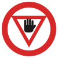
رکیں (اسٹاپ)
لائن پر پوری طرح رکیں اور آگے بڑھنے سے پہلے تمام ٹریفک کو راستہ دیں۔
پاکستان میں ڈرائیونگ ٹیسٹ کے لیے ضروری تمام 70 ٹریفک نشانات، بالکل ویسے جیسے سڑک پر نظر آتے ہیں، ہر ایک کا مطلب اور آپ کو کیا کرنا ہے۔ یہاں سیکھیں، پھر مفت کوئز سے خود کو آزمائیں۔

لائن پر پوری طرح رکیں اور آگے بڑھنے سے پہلے تمام ٹریفک کو راستہ دیں۔
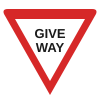
رفتار کم کریں اور بڑی سڑک کی ٹریفک کو راستہ دیں؛ ضرورت ہو تو رکیں۔
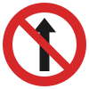
اس سڑک میں داخل ہونا منع ہے۔

یہاں بائیں جانب مڑنا منع ہے۔
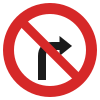
یہاں دائیں جانب مڑنا منع ہے۔
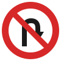
یہاں یو ٹرن لینا منع ہے۔

پابندی ختم ہونے تک دوسری گاڑیوں کو اوور ٹیک کرنا منع ہے۔

یہاں گاڑی پارک کرنا یا کھڑی چھوڑنا منع ہے۔
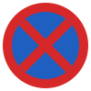
یہاں رکنا منع ہے، چاہے ایک لمحے کے لیے ہو۔
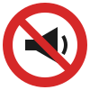
یہاں ہارن نہ بجائیں، جیسے ہسپتال اور اسکول کے قریب۔
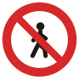
پیدل چلنے والے یہ سڑک استعمال نہیں کر سکتے۔

سائیکلیں داخل نہیں ہو سکتیں۔

ٹرک اور دوسری مال بردار گاڑیاں داخل نہیں ہو سکتیں۔
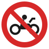
موٹر سائیکلیں داخل نہیں ہو سکتیں۔
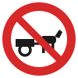
جانوروں سے کھینچی جانے والی گاڑیاں (تانگہ، گدھا گاڑی) داخل نہیں ہو سکتیں۔
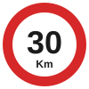
30 کلومیٹر فی گھنٹہ سے زیادہ رفتار منع ہے۔
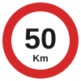
50 کلومیٹر فی گھنٹہ سے زیادہ رفتار منع ہے۔
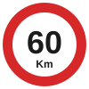
60 کلومیٹر فی گھنٹہ سے زیادہ رفتار منع ہے۔
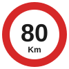
80 کلومیٹر فی گھنٹہ سے زیادہ رفتار منع ہے۔
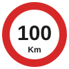
100 کلومیٹر فی گھنٹہ سے زیادہ رفتار منع ہے۔
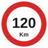
120 کلومیٹر فی گھنٹہ سے زیادہ رفتار منع ہے۔
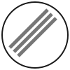
پچھلے نشانات کی پابندیاں، جیسے رفتار کی حد یا اوور ٹیک منع ہونا، یہاں ختم ہو جاتی ہیں۔
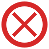
سڑک ہر قسم کی ٹریفک کے لیے بند ہے۔ کوئی دوسرا راستہ اختیار کریں۔
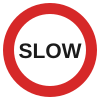
یہاں رفتار کم کریں اور آہستہ چلیں۔
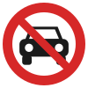
کاریں اور دوسری موٹر گاڑیاں اس سڑک پر داخل نہیں ہو سکتیں۔
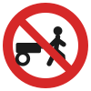
ہاتھ سے چلنے والی ریڑھیاں اس سڑک پر داخل نہیں ہو سکتیں۔
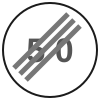
پہلے دکھائی گئی حد رفتار یہاں ختم ہو جاتی ہے؛ اب اس سڑک کی عام حد لاگو ہے۔
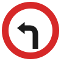
آپ کو بائیں جانب مڑنا ہوگا۔
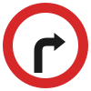
آپ کو دائیں جانب مڑنا ہوگا۔
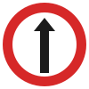
آپ کو سیدھا جانا ہوگا۔
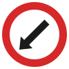
درمیانی پٹی یا رکاوٹ کے بائیں جانب سے گزریں۔
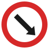
درمیانی پٹی یا رکاوٹ کے دائیں جانب سے گزریں۔
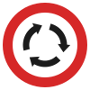
تیروں کی سمت میں ہی گول چکر کے گرد گھومنا لازمی ہے۔
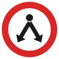
آپ رکاوٹ کے کسی بھی جانب سے گزر سکتے ہیں۔
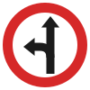
آپ کو سیدھا جانا ہوگا یا بائیں مڑنا ہوگا۔
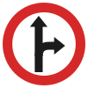
آپ کو سیدھا جانا ہوگا یا دائیں مڑنا ہوگا۔
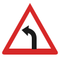
آگے بائیں جانب تیز موڑ ہے: موڑ سے پہلے رفتار کم کریں۔
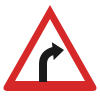
آگے دائیں جانب تیز موڑ ہے: موڑ سے پہلے رفتار کم کریں۔
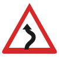
آگے ایک کے بعد ایک دو موڑ ہیں، پہلا موڑ نشان میں دکھائی گئی سمت میں ہے: رفتار کم کریں۔
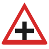
آگے چوراہا ہے: رفتار کم کریں اور دوسری سڑک کی ٹریفک پر نظر رکھیں۔

سڑک آگے ٹی جنکشن پر ختم ہوتی ہے: رکنے اور مڑنے کے لیے تیار رہیں۔
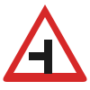
بائیں جانب سے چھوٹی سڑک ملتی ہے: وہاں سے نکلنے والی گاڑیوں پر نظر رکھیں۔
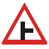
دائیں جانب سے چھوٹی سڑک ملتی ہے: وہاں سے نکلنے والی گاڑیوں پر نظر رکھیں۔
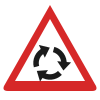
رفتار کم کریں اور گول چکر پر راستہ دینے کے لیے تیار رہیں۔

رفتار کم کریں اور سڑک پار کرنے والوں کے لیے رکنے کو تیار رہیں۔
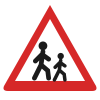
آگے اسکول یا کھیل کی جگہ ہے: رفتار کم کریں اور بچوں کا خیال رکھیں۔

سڑک پر پھسلن ہو سکتی ہے: رفتار کم کریں اور اچانک بریک یا موڑ سے بچیں۔

آگے سڑک تنگ ہو رہی ہے: رفتار کم کریں اور سامنے کی ٹریفک کا خیال رکھیں۔
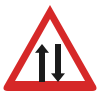
آگے ٹریفک دونوں طرف چلتی ہے: اپنی جانب رہیں۔
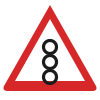
آگے ٹریفک سگنل ہے: رکنے کے لیے تیار رہیں۔
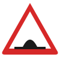
آگے اسپیڈ بریکر ہے: رفتار بہت کم کر دیں۔
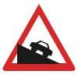
آگے تیز اترائی ہے: چھوٹا گیئر لگائیں اور رفتار قابو میں رکھیں۔
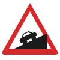
آگے تیز چڑھائی ہے: مناسب چھوٹا گیئر لگائیں۔

پتھر گر سکتے ہیں یا سڑک پر پڑے ہو سکتے ہیں: احتیاط سے گاڑی چلائیں اور یہاں نہ رکیں۔
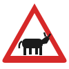
سڑک پر مویشی ہو سکتے ہیں: رفتار کم کریں اور رکنے کو تیار رہیں۔
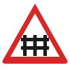
پھاٹک (جنگلے) کی تصویر کا مطلب ہے پھاٹک والا ریلوے کراسنگ۔ پھاٹک بند ہو تو رکنے کے لیے تیار رہیں۔
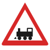
ریل انجن کی تصویر کا مطلب ہے بغیر پھاٹک ریلوے کراسنگ۔ آپ کو روکنے والا کوئی نہیں، اس لیے خود رکیں، دونوں طرف دیکھیں اور ٹرین کی آواز سنیں۔
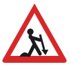
آگے سڑک پر کام ہو رہا ہے: رفتار کم کریں اور ہدایات پر عمل کریں۔
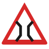
آگے پل تنگ ہے: اگر کوئی گاڑی پہلے سے پل پر ہو تو اسے راستہ دیں۔

سڑک پر کھلی بجری ہے: رفتار کم کریں اور فاصلہ زیادہ رکھیں۔
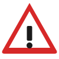
آگے ایسا خطرہ ہے جس کا کوئی الگ نشان نہیں: رفتار کم کریں اور ہوشیار رہیں۔
آگے سائیکل سوار ہو سکتے ہیں: رفتار کم کریں اور انہیں جگہ دیں۔
آگے جنگلی جانور سڑک پار کر سکتے ہیں: رفتار کم کریں اور سڑک کے کنارے پر نظر رکھیں۔
آگے سڑک ناہموار ہے: رفتار کم کریں اور اسٹیئرنگ مضبوطی سے پکڑیں۔
یہاں پارکنگ کی اجازت ہے۔
قریب ہسپتال ہے: خاموشی سے گاڑی چلائیں اور ایمبولینس کا خیال رکھیں۔
آگے پیٹرول پمپ ہے۔
اس سڑک پر ٹریفک صرف تیر کی سمت میں چلتی ہے۔
آگے راستہ بند ہے: یہ سڑک آگے کہیں نہیں جاتی۔
یہاں بسیں رکتی ہیں: یہاں پارک نہ کریں اور مسافروں کا خیال رکھیں۔
LaneWise میں سینکڑوں مزید سوالات، سرکاری طرز کے وقت والے ماک ٹیسٹ، خطرہ پہچاننے کی مشق اور 3D ڈرائیو ہے۔ مفت، اردو، انگریزی اور عربی میں۔